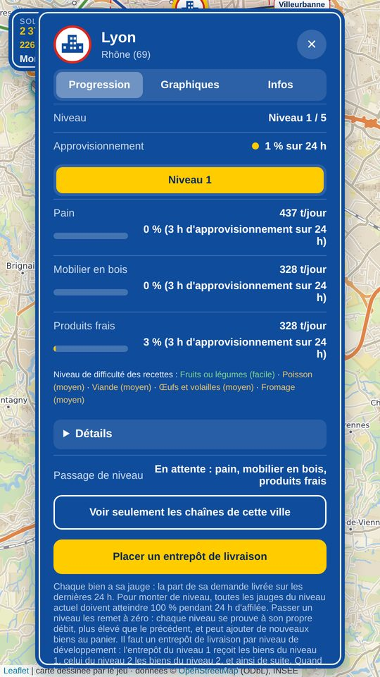
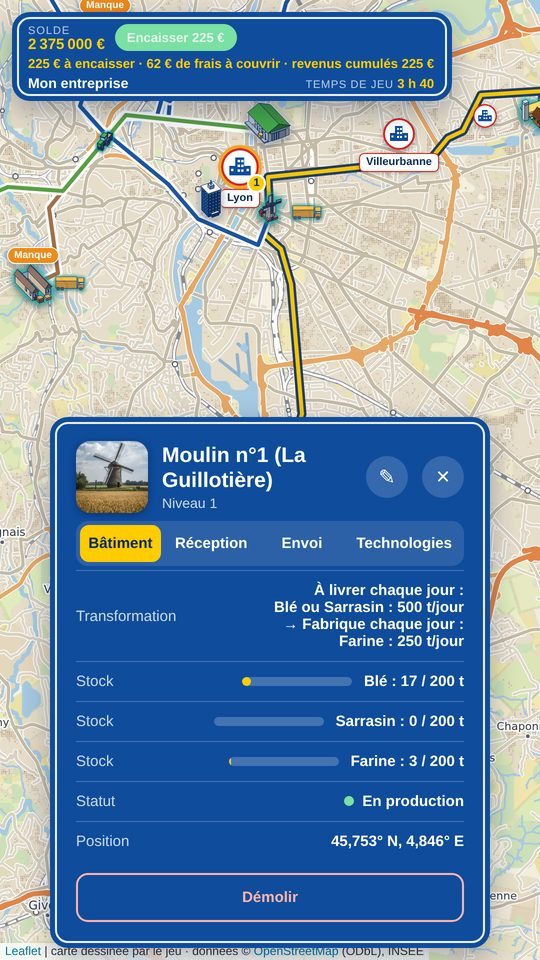
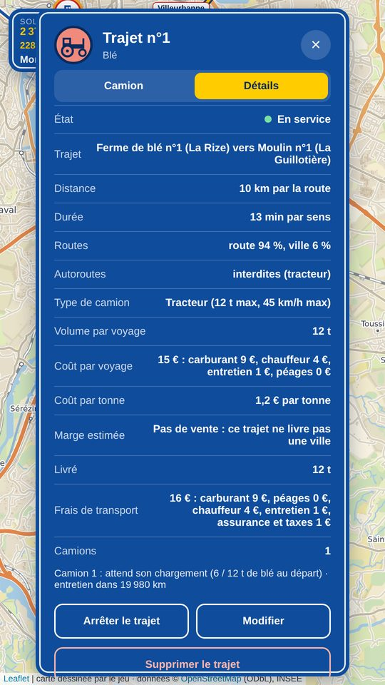
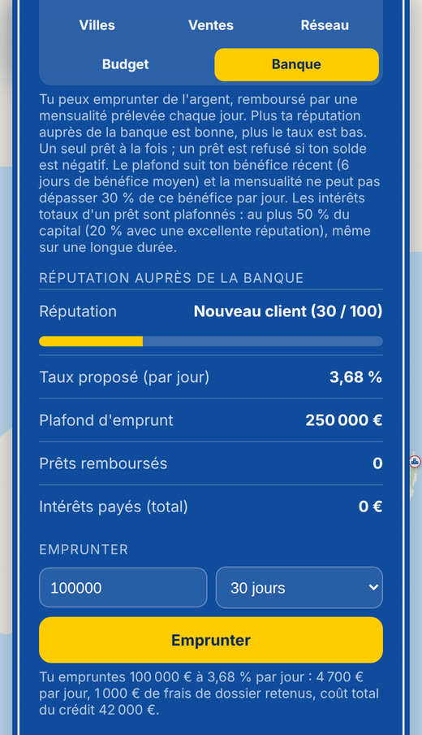
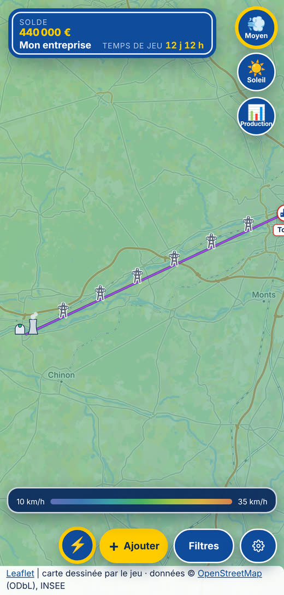
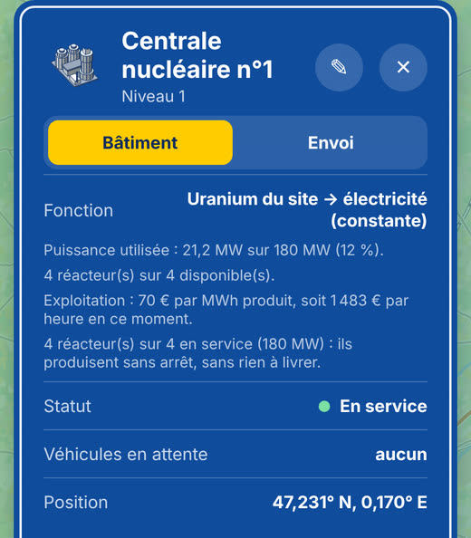
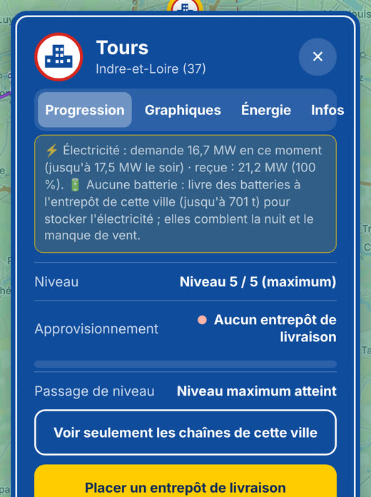

Hexagon Logistics Tycoon
Hexagon Logistics Tycoon
Fais rouler toute la France.Keep all of France moving.
Bâtis des chaînes logistiques, fais rouler tes camions, tes trains, tes bateaux et tes avions, et nourris les villes de France. Sans publicité, sans compte.Build supply chains, run your trucks, trains, ships and planes, and feed the cities of France. No ads, no account.
Disponible sur Google PlayAvailable on Google Play
Le jeu est disponible pour tout le monde sur Google Play. Merci à tous les testeurs ! Il vous faut un téléphone Android. Sans publicité, sans compte.The game is now available to everyone on Google Play. Thank you to all the testers! You need an Android phone. No ads, no account.
Télécharger sur Google PlayGet it on Google PlayPour suivre les nouveautés et donner votre avis, rejoignez la communauté.To follow the news and share your feedback, join the community.
Rejoindre la communautéJoin the community

Un jeu de logistique sur la vraie carte de FranceA logistics game on the real map of France
Les villes ont faim, soif et besoin de tout : pain, meubles, fruits et légumes, puis matériaux, boissons, vêtements, électronique, médicaments et batteries. À toi d'organiser la production et les livraisons.Cities are hungry, thirsty and need everything: bread, furniture, fruit and vegetables, then building materials, drinks, clothes, electronics, medicines and batteries. It's up to you to organise production and deliveries.
Construis tes chaînesBuild your chains
Fermes, moulins, boulangeries, scieries, usines, mines, entrepôts : chaque bâtiment a sa cadence et ses besoins. Le maillon le plus faible limite toute la chaîne.Farms, mills, bakeries, sawmills, factories, mines, warehouses: each building has its own pace and needs. The slowest link limits the whole chain.
Fais rouler tes véhiculesKeep your vehicles moving
Tes camions chargent, roulent sur les vraies routes, livrent et reviennent seuls. Plus tard : trains, bateaux et avions.Your trucks load, drive on real roads, deliver and come back on their own. Later: trains, ships and planes.
Fais grandir les villesMake cities grow
Une ville dont la demande est couverte monte de niveau, et ses demandes se diversifient. Tu choisis librement quoi produire.A city whose demand is met moves up a level, and its demands diversify. You freely choose what to produce.
Un jeu qui continue sans toiA game that carries on without you
Pendant ton absence, la simulation continue (jusqu'à 48 h de jeu). Tu peux aussi accélérer le temps.While you are away, the simulation carries on (up to 48 hours of game time). You can also speed time up.
Recherche et partenairesResearch and partners
Des technologies à débloquer, des objectifs, et des partenaires qui développent une ville pour toi.Technologies to unlock, goals to reach, and partners who develop a city for you.
Un tutoriel pour démarrerA tutorial to get started
Une première chaîne de pain, pas à pas, puis ta vraie partie démarre de zéro. Disponible en français, anglais et allemand.A first bread chain, step by step, then your real game starts from scratch. Available in French, English and German.
Le jeu sur téléphoneThe game on a phone
La carte de France, un bâtiment, une ville, un trajet.The map of France, a building, a city, a route.


Les nouveautés de la mise à jourWhat's new in the update
Les chauffeurs routiers font maintenant une pause de 45 minutes, comme la règle européenne. Les montagnes sont mieux délimitées dans toute la France. Un camion qui descend d’une montagne enneigée n’est plus bloqué à tort en plaine, et l’heure d’arrivée affichée tient compte des blocages. Les vols ont une distance minimale de 100 km. L’interface a été retravaillée : paramètres et annonces dans la rangée du bas, liste d’achat des camions refaite, tutoriel avec un bouton « Précédent ». L’achat de la version complète est plus fiable, et de nombreuses corrections rendent le jeu plus stable.Truck drivers now take a 45-minute break, like the European rule. Mountains are better delimited across France. A truck coming down from a snowy mountain is no longer wrongly blocked on the plain, and the displayed arrival time now takes blockages into account. Flights have a minimum distance of 100 km. The interface has been reworked: settings and announcements in the bottom row, a redesigned truck shop list, and a “Previous” button in the tutorial. Buying the full version is more reliable, and many fixes make the game more stable.
La vidéo de présentationThe presentation video
Le jeu en images. La vidéo est en anglais.The game in pictures.
Version gratuite et version complèteFree version and full version
La version complète s'achète en une seule fois, sans abonnement.The full version is a one-time purchase, with no subscription.
GratuiteFree
- Le niveau 1 des villes
- Le centre de recherche et ses technologies de départ
- La vitesse ×2
- Les objectifs
- L'option de la mer des Pyrénées
- City level 1
- The research centre with its starting technologies
- ×2 speed
- Goals
- The Pyrenees sea option
ComplèteFull
- Les niveaux 2 à 5 des villes et toutes les technologies
- Les bâtiments uniques et le budget de l'État
- Les partenaires
- Les trains, les bateaux et les avions
- Les événements aléatoires et les fêtes des villes
- City levels 2 to 5 and all technologies
- Unique buildings and the State budget
- Partners
- Trains, ships and planes
- Random events and city festivals
Sans publicité. Sans compte. Sans collecte de données : tes parties restent sur ton téléphone.No ads. No account. No data collection: your games stay on your phone.
Simulateur de chaînesChain simulator
Quelle ville veux-tu nourrir ? Choisis-la, indique son niveau : le simulateur calcule combien de bâtiments construire et combien ça coûte pour couvrir sa demande.Which city do you want to feed? Pick it and set its level: the simulator works out how many buildings to build and what it costs to cover its demand.
En développementIn development
Ce que je prépare pour les prochaines versions. Ces fonctions sont en test : elles ne sont pas encore dans la version Google Play et peuvent encore changer.What I'm working on for the next versions. These features are in testing: they are not in the Google Play version yet and may still change.
La banqueThe bank
En mode réaliste, emprunte de l'argent : la mensualité est prélevée chaque jour. Ta réputation auprès de la banque fait baisser le taux, et les intérêts totaux sont plafonnés.In realistic mode, borrow money: the payment is taken every day. Your reputation with the bank lowers the rate, and total interest is capped.
L'énergieEnergy
Construis des centrales (nucléaire, barrages, gaz, solaire) sur de vrais sites, tire des lignes électriques et consulte les cartes du vent et du soleil.Build power plants (nuclear, dams, gas, solar) on real sites, lay power lines and check the wind and sun maps.
Les villes consomment de l'électricitéCities use electricity
Les grandes villes ont besoin de courant, plus en hiver et le soir. Relie-les à tes centrales et livre des batteries pour tenir la nuit.Big cities need power, more in winter and in the evening. Connect them to your plants and deliver batteries to last through the night.






Captures d'une partie de test : les montants et les valeurs peuvent changer.Screenshots from a test game: amounts and values may change.
Rejoignez la communautéJoin the community
Posez vos questions, donnez votre avis et suivez les nouveautés du jeu.Ask questions, share your feedback and follow the game's news.

CréditsCredits
La carte est dessinée par le jeu à partir de données © les contributeurs d'OpenStreetMap (licence ODbL) et de l'INSEE. Les données dérivées utilisées par le jeu sont publiées ici sous licence ODbL.
The map is drawn by the game from data © OpenStreetMap contributors (ODbL licence) and INSEE. The derived data used by the game is published here under the ODbL licence.